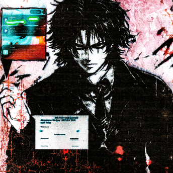
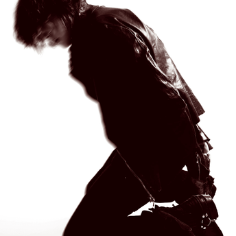
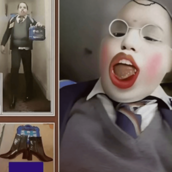
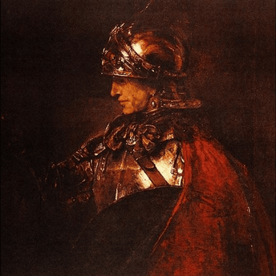
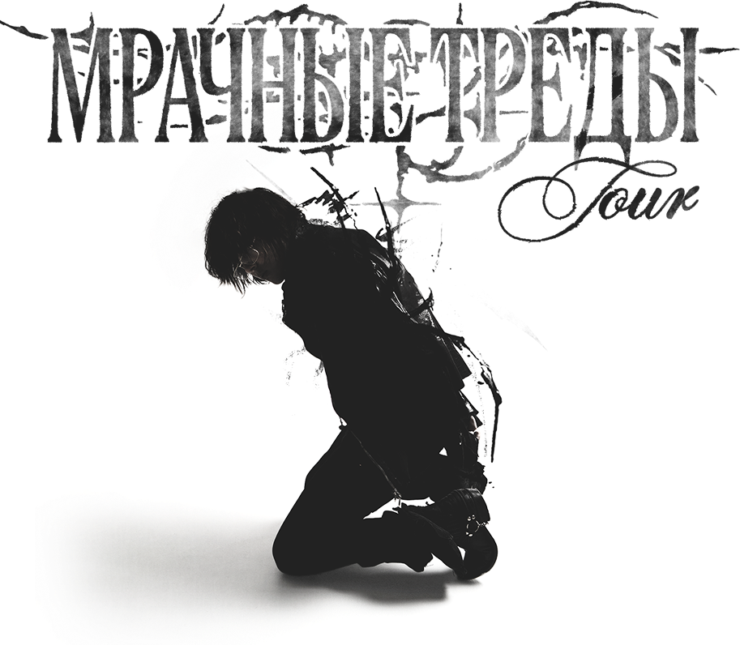

мрачные треды

Российский рэп-исполнитель и продюсер. Музыкальную карьеру начал в марте 2024 года. Также он имеет альтер-эго ashleyrossmith.
Темный принц влетел на сцену, словно вспышка. Артист с загадочным образом и резким саундом стремительно ворвался в поле русскоязычного SoundCloud-рэпа. Ему хватило нескольких релизов, чтобы стать ярким представителем новой волны. Музыка принца — напряженный сплав мрачной лирики, густого звука, плотных битов и нарочитой жанровой гибкости. Он сразу задал высокую планку и стал одним из наиболее обсуждаемых имен в цифровом андеграунде.

ПАПА
мрачные треды

овердоз

отвратительный король

тёмный принц
ПРЯМО СЕЙЧАС!!! Проходит тур темного принца - МРАЧНЫЕ ТРЕДЫ Tour

| Дата | Город | Клуб |
|---|---|---|
| I4.03 | Санкт-Петербург | Sound |
| 22.03 | Москва | TAU |
| 27.0I | Иркутск | Soprano |
| 28.0I | Красноярск | Circus |
| 30.0I | Новосибирск | Подземка |
| I3.02 | Воронеж | Aura |
| I4.02 | Ростов-на-Дону | Кроп Арена |
| I5.02 | Краснодар | Кроп Арена |
| I7.02 | Саратов | Onyx |
| I9.02 | Самара | Сигнал |
| 20.02 | Оренбург | СТУДИЯ |
| 22.02 | Уфа | Дом печати |
| 24.02 | Челябинск | The Ozz |
| 25.02 | Тюмень | Главклуб |
| 27.02 | Екатеринбург | Свобода |
| 28.02 | Пермь | Свобода |
| 02.03 | Казань | Werk |
| 03.03 | Нижний Новгород | Milo Concert Hall |